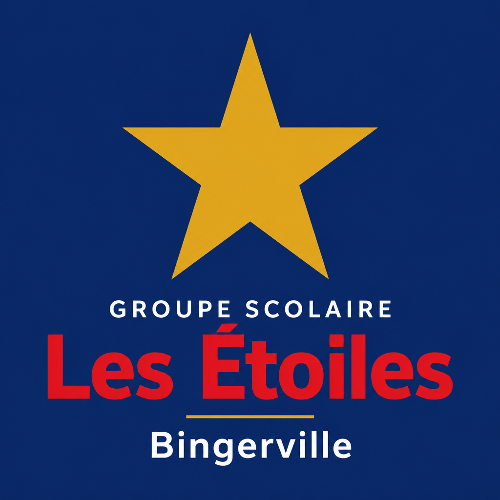

Groupe Les Étoiles · Bingerville · Adjamé-Bingerville
Plateforme Les Étoiles Ce qui est déjà en place
« apprendre autrement, grandir ensemble »
Support de rendez-vous du 22 août 2026. Cliquez sur Imprimer, puis Enregistrer au format PDF — 8 pages A4 paysage, marges minimales.

Groupe Les Étoiles · Bingerville · Adjamé-Bingerville
« apprendre autrement, grandir ensemble »
Vision
Chacun a son écran. Les informations se rejoignent. Plus besoin de WhatsApp pour tout, ni de cinq logiciels différents.
01 · Public
La vitrine du campus. Les familles découvrent l’école, les cycles, les activités et s’inscrivent.
02 · Familles
Notes, devoirs, bulletin, bus, santé, paiements et QR de sortie — le suivi de l’enfant en un lieu.
03 · Classe
Appel, notes, devoirs avec pièces jointes, messages, emploi du temps. L’enseignant travaille, les parents voient.
04 · Pilotage
Trois établissements. Inscriptions, pédagogie, finances, RH et services — le tableau de bord du groupe.
05 · Grille
Un écran dédié, séparé de la direction. On scanne ou on saisit le code. La sortie est tracée.
Ce que ça change
Identité Les Étoiles
Familles
Le site donne envie. L’espace parents rassure au quotidien.
Espace parents
Connexion par le matricule de l’élève. Un tableau de bord, pas une usine.
Équipe & grille
L’enseignant tient sa classe. Le vigile tient la sortie. Deux métiers, deux écrans, zéro mélange.
Espace enseignants
Nouveau · Espace vigile
Plus besoin d’ouvrir l’administration. Le vigile a sa propre connexion, son tableau de bord, son champ de saisie.
Le parent montre le téléphone. Le vigile valide. La direction sait qui est sorti.
Direction · scolarité & pédagogie
Menu groupé : Accueil, Établissement, Scolarité, Pédagogie, Finances, Services, RH.
Groupe
Inscriptions
Pédagogie
Bénéfice direction
Le dossier n’est plus dans un classeur d’un côté et un tableur de l’autre. La fiche vit : pièces, statut, PDF, puis notes et bulletin. Le collège en ouverture a déjà sa place dans le groupe — on n’aura pas à tout recréer le jour de l’agrément d’ouverture.
Direction · finances, campus, équipe
Ce que la fondatrice veut pouvoir montrer : la scolarité rentre, la sortie est sûre, la paie est propre.
Finances
Les familles voient leurs échéances. La direction voit qui a payé.
Services du campus
Le vigile valide. La direction génère. Le parent montre.
Ressources humaines
L’enseignant télécharge sa fiche. La direction lance la paie du mois.
Aujourd’hui · 5 minutes
Trois écrans suffisent pour convaincre : le parent, le vigile, la direction.
Parent
Ouvrir l’espace parents. Voir notes, bulletin PDF, devoirs. Afficher le QR de sortie du jour.
Vigile
Connexion vigile. Saisir ou scanner ETOILES-A7K2. Ama passe en « validé ».
Direction
Fiche d’inscription (pièces, PDF). Bulletin officiel. Fiche de paie d’un agent.
Identifiants de démonstration — à usage interne
Parent Ama (maternelle) · ETOILES-DEMO-001 / Parent2026!
Parent Marc (primaire) · ETOILES-DEMO-002 / Parent2026!
Enseignant · enseignant@lesetoiles.ci / Enseignant2026!
Direction · admin / Direction2026!
Vigile · vigile / Vigile2026!
Codes grille · Ama ETOILES-A7K2 · Marc ETOILES-M3P9
Démonstration sur cet ordinateur aujourd’hui. Ces comptes serviront à la visite — ils seront retirés avant la mise en service réelle.
Pour le rendez-vous
Le souffle reste : tout cela existe déjà. On cadre ensuite la mise en service, sans se tromper sur ce qui reste à brancher.
Décisions du jour
Ensuite, pour la mise en service : branchement du paiement réel, base durable, e-mails de l’école, retrait des comptes de démonstration.
En toute clarté
Ce document montre ce qui existe déjà. La suite, nous la datons ensemble.